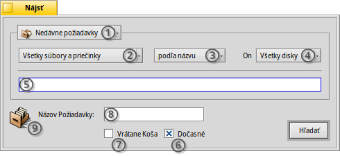
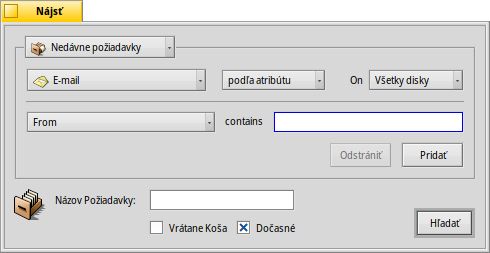
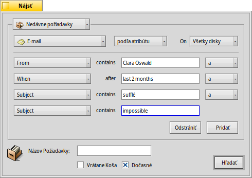
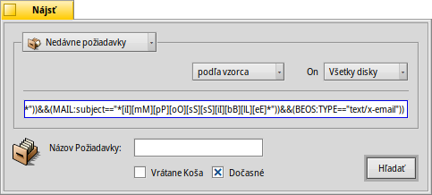
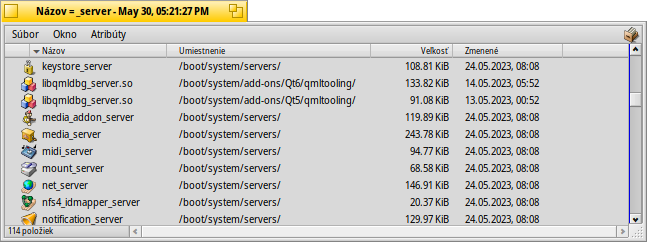

| Obsah |
|
Okno Nájsť Základné požiadavky - „podľa názvu“ Pokročilé požiadavky - „podľa atribútu“ Ešte pokročilejšie požiadavky - „podľa vzorca“ Výsledkové okno Šablóny požiadaviek |
Požiadavky
Požiadavka je systém hľadania súborov založený na atribútoch a môže byť vykonaná v Trackeri alebo Termináli. Požiadavky sa ukladajú v /boot/home/queries/ a predvolene tam zostávajú sedem dní, potom sú prečistené. Pamätajte, že tieto súbory nie sú statické výsledky hľadania, ale vzorce požiadaviek a ich otvorením spustíte nové hľadanie.
Je to ešte lepšie - na opätovné vykonanie požiadavky na ňu nemusíte ani dvakrát kliknúť. Môžete postupne prechádzať uloženou požiadavkou kliknutím pravým tlačidlom na ňu a navigáciou cez jej submenu.
 Okno Nájsť
Okno Nájsť
Novú požiadavku začnete vyvolaním menu buď z menu Panelu, alebo akéhokoľvek okna Trackera alebo Plochy (ktorá je vlastne celoobrazovkovým oknom Trackera). Skratka je ALT F. Privíta vás toto okno:
The menu allows to an existing query and the current search parameters as a query or Query template. It also gives quick access to .
lets you include the Trash in your search.
holds a list of all query templates on your system.
Zúženie hľadania zo na konkrétne typy súborov.
- Určenie metódy hľadania:
- - základný typ hľadania podľa názvu súboru alebo priečinka
- - pokročilý typ hľadanie, určujete hľadané výrazy pre jeden alebo viac atribútov
- - ešte pokročilejší typ hľadania, môžete vyladiť komplexný výraz požiadavky
Výber diskov, na ktorých sa bude hľadať.
Zadanie hľadaného výrazu.
Základné požiadavky - „podľa názvu“
Ak chcete jednoducho nájsť všetky súbory a priečinky na vašich diskoch, ktoré zodpovedajú určitému vzoru, nechajte možnosť hľadania, zadajte hľadaný výraz to textového poľa a stlačte ENTER.
Pokročilé požiadavky - „podľa atribútu“
Môžete vytvoriť ešte pokročilejšie požiadavky hľadaním vrámci atribútov konkrétnych typov súborov. Aby to mohlo fungovať, tieto atribúty musia byť indexované.
Môžete začať nastavením typu súboru z na, povedzme, a zmeniť metódu hľadania na .
Týmto pribudne naľavo od textového poľa rozbaľovacieho menu a tlačidlá a pod tým. Z menu si vyberiete, ktorý atribút má byť predmetom požiadavky. Tlačidlami a môžete hľadať ďalšie atribúty alebo ich znova odstrániť. Tieto atribúty môžete logicky spojiť operátormi A alebo ALEBO.
Ako príklad spravme požiadavku na e-mail:
Takto vyzerá okno Nájsť, keď hľadáte všetky e-maily, ktoré vám Clara Oswald poslala za posledné 2 mesiace a mali v predmete slová „sufflé“ alebo „impossible“.
Ako vidíte, hľadanie časovo založených atribútov ponúka zopár užitočných fráz: okrem „posledné 2 mesiace“ môžete použiť „dnes“, „včera“, „Pondelok“ alebo „minulý pondelok“ (čo by bol pondelok minulého týždňa), či „posledné 2 minúty/hodiny/dni/týždne“.
Je to dobrý spôsob na zúženie výsledkov hľadania.
Ešte pokročilejšie požiadavky - „podľa vzorca“
Písanie vzorca ručne môže byť skľučujúce a veľmi nepraktické. Napriek tomu ale má využitie.
Vezmite si hore uvedenú požiadavku podľa atribútu ohľadom e-mailov od Clary. Ak máte všetky atribúty a hľadané výrazy nastavené, skúste prepnúť do režimu a nechajte sa ohromiť týmto jednoriadkovým reťazcom:
Ešte raz ako text upravený pre lepšiu čitateľnosť:
(((((MAIL:from=="*[cC][lL][aA][rR][aA] [oO][sS][wW][aA][lL][dD]*")
&&(MAIL:when>=%2 months%))
&&(MAIL:subject=="*[sS][uU][fF][fF][lL][éÉ]*"))
||(MAIL:subject=="*[iI][mM][pP][oO][sS][sS][iI][bB][lL][eE]*"))
&&(BEOS:TYPE=="text/x-email"))
Aké je využitie?
Reťazec môžete kopírovať a vložiť do e-mailu, fóra alebo IRC pre iných na použitie alebo ladenie.
You can use this method to construct a query in mode and then switch to mode, to comfortably generate a search string. Enclosed in single quotes, that string can then be used with the query command in the Terminal.
Môžete doladiť vašu požiadavku vložením zátvorky kde to je potrebné, nastavením odlišovania veľkosti písma alebo negáciou logických kombinácií napr. zmenou „==“ na „!=“ pre A ANI. Potrebujete iba základné chápanie regulárnych výrazov a možno nejaké základy skriptovania.
Výsledkové okno
Keď začnete hľadanie, okno Nájsť bude nahradené výsledkovým oknom. Tu je príklad požiadavky pre slovo „server“:
Až na šedé pozadie funguje výsledkové okno rovnako ako všetky ostatné okná Trackera. Niektoré veci stoja za zmienku:
Môžete otvoriť umiestnenie súboru dvojitým kliknutím na jej atribút cesty.
Pomocou alebo ALT G sa môžete vrátiť do okna Nájsť a upraviť vašu požiadavku.
Požiadavka je živá, teda ak sa súbor vyhovujúci kritériám hľadania objaví alebo odstráni z vašeho systému, táto zmena sa odrazí vo výsledkoch v reálnom čase.
Môžete priradiť rozumné rozložené atribútov konkrétnemu typu súboru. Otvorte súbor obsahujúci súbory takého typu, pre aký chcete vytvoriť šablónu, a usporiadajte atribúty tak, ako ich chcete vidieť vo výsledkoch požiadavky. Toto rozloženie skopírujte v .
Otvorte /boot/home/config/settings/Tracker/DefaultQueryTemplates, vytvorte nový priečinok s názvom skupina/typ_súboru, lomka nahraďte podčiarkovníkom, napr. „audio_x-mp3“. Otvorte tento priečinok a vložte predtým skopírované rozloženie v .
Šablóny požiadaviek
If you double click a saved query, the file search is at once started and the result window opens immediately. However, you may not want to search with these exact search parameters, but use it as starting point to only slightly tweak the formula.
By using the menu item (see (1) in screenshot at the top), you can create just such a template. Double clicking it won't open a result window, but the Find panel, giving you the opportunity to quickly change search strings or add/remove attributes.
Wherever you choose to save query templates, they'll be listed in the Find panel's menu.